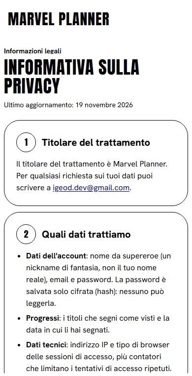
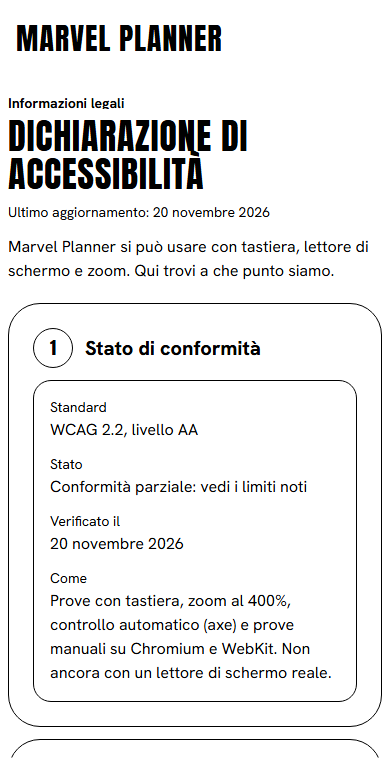

Privacy e Accessibilità: pagina bianca con intestazione da saga, schede numerate e dichiarazione di accessibilità.
Riferimento: codice di 4bfbea4 (PrivacyPage, AccessibilityPage, AppLayout.less); le due pagine non sono cambiate rispetto a main. Cornici con il CSS di tokens e componenti del canvas e le classi vere dell'app (.card, .btn--ink, .site-main, .status-page, .site-footer), i testi dei cinque file di lingua e un'intestazione segnaposto della stessa altezza. Non verificato: Safari e Firefox, lettore di schermo, contrasto forzato reale di Windows. Le cornici da 1280 px il canvas le mostra a 1144.
1 · Si torna alla pagina bianca, gestita meglio. Parere del committente: l'eroe scuro, l'indice, il numero giallo gigante e il biglietto inclinato facevano «un'altra app» e «AI-centrico»; la pagina bianca piaceva. Alla prima versione mancavano identità e ritmo, non la pagina bianca. Ora: l'intestazione è quella di una saga (.saga__header: titolo Anton sul fondo pagina, --fs-h1-sm, da 64 em --fs-xl) con una riga sopra («Informazioni legali», footer.legal, già nel piè di pagina) e una sotto («Ultimo aggiornamento» e, nell'Accessibilità, l'introduzione), entrambe .muted. Niente pannello scuro, niente numero giallo gigante. I box numerati restano: ogni sezione è una scheda (.card, come le fasi del Planner) con il numero in un cerchio. Se per «box» si intendevano solo i cerchi, la variante è una riga di CSS in meno: .text-section senza .card.
2 · L'indice sparisce. Era una mia aggiunta. Ho messo la colonna a destra perché nel Planner i pannelli stanno a destra, ma i sommari di una pagina di testo si aspettano a sinistra, e sul telefono era un secondo blocco prima del testo. Funziona anche senza: le sezioni sono dieci schede numerate con titoli corti, la pagina è lunga circa 4100 px a 390 px, cinque schermate (oggi 3750: le dieci schede costano il 9 %), e le ancore restano (/privacy#h-rights arriva alla sezione: basta un id sui titoli, nessuna interfaccia in più). Per orientarsi basta «Torna su» (BackToTop, già nel Planner e nel Film). Se dopo la rilettura dei testi la Privacy restasse lunga, l'indice può tornare, a sinistra e sotto il titolo sul telefono: non serve ora. Meno codice: niente <details>, niente DESKTOP_QUERY da esportare, niente colonna fissa.
3 · Colonna e posizione. Una colonna centrata da 36 rem, la stessa per intestazione e schede; il titolo parte a 8 px sotto l'intestazione come il Planner (P6: le pagine con schede partono lì, le pagine di stato come la 404 restano centrate). Il testo sta in schede con --ink su --surface: circa 75 caratteri per riga a 1280 px (oggi 103).
4 · Dichiarazione di accessibilità (P8). Intestazione come sopra, con l'introduzione; tre schede (Stato di conformità con la scheda dei fatti, Come usare il sito, Limiti noti) e il biglietto giallo dritto per la segnalazione (il pulsante scuro è un mailto: con l'indirizzo). Tolta la frase «Rispondiamo entro 10 giorni lavorativi»: non promette tempi che nessuno ha deciso. L'«AA» gigante è tolto: lo standard sta nella scheda dei fatti. Testi riscritti con scrittura-ux (TESTI_PAGINE.md): da far rileggere dal committente e da un esperto (il livello «Conformità parziale» e i limiti noti sono di chi firma).
5 · Cosa non cambia dal disegno precedente. I testi (tranne la frase tolta), i riferimenti di legge, la scheda dei fatti, il cerchio del numero, i token (nessun valore nuovo). Contrasto forzato: .card ha già il contorno; il cerchio del numero e il biglietto vanno aggiunti (vedi «Regola per Code»).
A sinistra desktop, a destra telefono.
Desktop e telefono, chiaro e scuro; fine pagina e piè di pagina.
Intestazione con introduzione, scheda dei fatti, biglietto dritto per la segnalazione.
Titoli più lunghi (de: «Datenschutzerklärung», «Erklärung zur Barrierefreiheit»), e 320 px.
Le pagine con schede partono a 8 px dall'intestazione; le pagine di stato restano centrate.
Emulazione di Chromium (forcedColors: active), 390 px.


Prese con Playwright (Chromium) sulle classi dell'app. I caratteri per riga sono stimati sulla larghezza media di una frase campione (16 px, Hanken Grotesk caricato dal browser di prova: non verificato con i font ospitati). Le cornici da 1280 px il canvas le mostra a 1144: le distanze verticali non cambiano.
| Misura | Oggi | Proposta |
|---|---|---|
| Distanza dall'intestazione (390 e 1280 px) | scheda: 8 + 16 + 24 = 48 px a 390, 8 + 16 + 40 = 64 a 1280 | 8 px più il respiro dell'intestazione di saga: il titolo parte dove parte il Planner (.site-main, AppLayout.less r.9-17) |
| Larghezza del testo, 1280 px | scheda 800, testo 704 px: circa 103 caratteri per riga | colonna 36 rem = 576 px, scheda con padding 2 rem: testo 512 px, circa 75 caratteri |
| Telefono, 390 px | testo 342 px: 50 caratteri | schede da 374 px, testo 326 px: circa 47 caratteri |
| Altezza della pagina intera, Privacy (con intestazione e piè di pagina) | 390 px: 3750 px · 1280 px: 2436 px | 390 px: 4100 px (+9 %) · 1280 px: 3274 px (+34 %: la colonna è più stretta, 512 px contro 704) |
| Scorrimento orizzontale (390, 1280 e 320 px; it, de, fr) | — | nessuno (misurato su tutte le cornici) |
| 404 | centrata | invariata |
| Contrasti | — | --ink-2 su --bg (kicker e riga di aggiornamento) 6,40 chiaro / 7,4 scuro; testo nelle schede --ink su --surface 16,86 / 14,79; giallo su --panel nel cerchio 9,39 / 5,17; testo sul biglietto 9,39 (misurati nella versione precedente: stessi token) |
Rivisti con la skill scrittura-ux (regole del progetto; verdetti accorciare / unire / riscrivere; le chiavi non elencate: tenere). Privacy: undici chiavi riviste, riferimenti di legge, durate e soggetti invariati. Accessibilità: dichiarazione nuova. Regola 8: testi di privacy e accessibilità, vanno riletti dal committente e da un esperto; fr, es, de da un madrelingua. Le cinque lingue complete di ogni chiave sono in docs/design/TESTI_PAGINE.md.
| Chiave | Verdetto | Prima (it) | Dopo (it) |
|---|---|---|---|
privacy.data.accountText | riscrivere: «mai leggibile» → «nessuno può leggerla»; stesso significato (hash) | nome da supereroe (un nickname di fantasia: non ti chiediamo il nome reale), email e password. La password è conservata solo in forma cifrata (hash) e non è mai leggibile. | il nome da supereroe (lo scegli tu, può essere di fantasia), l'email e la password. La password è salvata solo cifrata (hash): nessuno può leggerla. |
privacy.data.technicalText | accorciare | indirizzo IP e tipo di browser associati alle sessioni di accesso, e contatori usati per limitare i tentativi di accesso ripetuti. | l'indirizzo IP e il tipo di browser delle sessioni di accesso, più dei contatori che frenano i tentativi di accesso ripetuti. |
privacy.data.deviceText | unire: lingua e filtri dentro la stessa frase (prima erano una seconda frase che ripeteva «nello stesso modo»); «Preferenze privacy» diventa un link ({link}) che apre il riquadro, senza virgolette: testo del link = footer.privacySettings (esiste già nelle cinque lingue) | senza account i progressi restano salvati solo nel tuo browser (localStorage) e non vengono inviati a noi. Nello stesso modo vengono ricordati la lingua e i filtri scelti. Puoi cancellare questi dati in qualsiasi momento da «Preferenze privacy». | senza account, progressi, lingua e filtri restano nel tuo browser (localStorage) e non ci arrivano. Puoi cancellarli quando vuoi da {link}. |
privacy.data.shareText | riscrivere: soggetto davanti («chiunque abbia il link vede…») | se attivi la condivisione, il tuo nome da supereroe e i titoli che hai visto sono visibili a chiunque abbia il link, fino alla scadenza che scegli o finché non lo disattivi. Il link contiene un codice casuale, non il tuo identificativo. | se attivi la condivisione, chiunque abbia il link vede il tuo nome da supereroe e i titoli che hai visto, finché il link non scade o non lo disattivi. Nel link c'è un codice casuale, non il tuo identificativo. |
privacy.data.suggestionsText | riscrivere: minuscola come le altre voci; «film» → «titolo»; «visibili solo a noi» → «li vediamo solo noi» | Se invii un suggerimento di modifica conserviamo il testo che scrivi (è testo libero: non scrivere dati personali), il film e la parte della pagina a cui si riferisce, la data e il tuo nome da supereroe, visibili solo a noi. Vengono eliminati insieme all'account. | se invii un suggerimento conserviamo il testo (è libero: non scriverci dati personali), il titolo e la parte della pagina a cui si riferisce, la data e il tuo nome da supereroe. Li vediamo solo noi e spariscono con l'account. |
privacy.cookies.body | riscrivere: frase unica sul perché non serve il consenso; stessi riferimenti di legge; il periodo finale usa lo stesso link ({link} = footer.privacySettings, non più «finestra «…»»): privacy.cookies.link si può togliere | Usiamo solo cookie tecnici, necessari al funzionamento: un cookie di sessione per mantenerti connesso. Non usiamo cookie di analisi, pubblicità o profilazione né cookie di terze parti (salvo quelli che YouTube può impostare se avvii tu un trailer), per cui non è richiesto il tuo consenso (art. 122 del Codice privacy, direttiva ePrivacy e linee guida del Garante del 10 giugno 2021). L'elenco completo è nella {link}. | Usiamo solo cookie tecnici, necessari al funzionamento: uno solo, di sessione, che mantiene attivo il tuo accesso. Niente cookie di analisi, pubblicità o profilazione, né di terze parti, tranne quelli che YouTube può impostare se avvii tu un trailer. Per questo non serve il tuo consenso (art. 122 del Codice privacy, direttiva ePrivacy, linee guida del Garante del 10 giugno 2021). L'elenco completo è in {link}. |
privacy.providers.body | accorciare: stesse garanzie e stessi soggetti | Il sito e il database sono ospitati da Cloudflare, con database situato nell'Europa occidentale; Cloudflare agisce come responsabile del trattamento. Le informazioni sui titoli (sinossi, trame, cast, locandine e sfondi) vengono richieste dal nostro server a TMDB, Wikipedia e Wikidata: il tuo browser non contatta mai direttamente questi servizi e quindi non comunica loro il tuo indirizzo IP. Cloudflare ha sede negli Stati Uniti: alcuni dati potrebbero essere trasferiti fuori dall'Unione europea, nel rispetto delle garanzie previste dal GDPR (EU-US Data Privacy Framework e clausole contrattuali standard). | Sito e database sono ospitati da Cloudflare, con il database nell'Europa occidentale. Cloudflare è responsabile del trattamento. Le informazioni sui titoli (sinossi, trame, cast, locandine, sfondi) le chiede il nostro server a TMDB, Wikipedia e Wikidata: il tuo browser non contatta mai questi servizi, quindi il tuo indirizzo IP non arriva a loro. Cloudflare ha sede negli Stati Uniti, quindi alcuni dati potrebbero lasciare l'Unione europea, con le garanzie previste dal GDPR (EU-US Data Privacy Framework e clausole contrattuali standard). |
privacy.retention.body | unire: sessioni scadute e link scaduti nella stessa frase; stesse durate (7 giorni, 1 giorno, 90 giorni, 30 giorni) | Conserviamo i dati dell'account finché esiste. Le sessioni scadono dopo 7 giorni e quelle scadute vengono eliminate ogni giorno; i contatori contro gli accessi ripetuti vengono eliminati dopo un giorno; le informazioni sui titoli ricevute da terzi restano in cache al massimo 90 giorni. Quando elimini l'account, nome da supereroe, email, progressi e sessioni vengono cancellati subito; eventuali copie di backup tecniche vengono sovrascritte entro 30 giorni. I link di condivisione scaduti vengono eliminati ogni giorno. | Conserviamo i dati dell'account finché esiste. Le sessioni durano 7 giorni; ogni giorno eliminiamo quelle scadute e i link di condivisione scaduti. I contatori contro gli accessi ripetuti si cancellano dopo un giorno. Le informazioni sui titoli che riceviamo da terzi restano in cache al massimo 90 giorni. Se elimini l'account, nome da supereroe, email, progressi e sessioni spariscono subito; le copie di backup tecniche vengono sovrascritte entro 30 giorni. |
privacy.rights.body | riscrivere: «Dalla pagina Il tuo account» (maiuscola nel mezzo) → «{account}: qui puoi…»; stessi diritti | Puoi chiedere in qualsiasi momento l'accesso, la rettifica, la cancellazione, la limitazione o la portabilità dei tuoi dati, oppure opporti al trattamento, scrivendo a {email}. Dalla pagina {account} puoi modificare il nome da supereroe, scaricare i tuoi dati in formato JSON ed eliminare l'account. Non prendiamo decisioni basate su trattamenti automatizzati. Hai inoltre il diritto di proporre reclamo al Garante per la protezione dei dati personali ({garante}). | Puoi chiedere in qualsiasi momento di accedere ai tuoi dati, correggerli, cancellarli, limitarne il trattamento o riceverli in un formato portabile, e puoi opporti al trattamento: scrivi a {email}. {account}: qui puoi cambiare il nome da supereroe, scaricare i dati in JSON ed eliminare l'account. Non prendiamo decisioni basate su trattamenti automatizzati. Se pensi che non rispettiamo le regole, puoi fare reclamo al Garante per la protezione dei dati personali ({garante}). |
privacy.other.body | tenere quasi uguale; ripete in parte purposes.noProfiling (da valutare con l'esperto) | Non vendiamo né condividiamo i tuoi dati personali per pubblicità mirata o altre finalità commerciali. Le stesse tutele valgono per chi usa il sito da fuori dall'Unione europea (ad esempio in California, nel Regno Unito o in Brasile): puoi esercitare gli stessi diritti scrivendo a {email}. | Non vendiamo né condividiamo i tuoi dati personali per pubblicità mirata o altri scopi commerciali. Le stesse tutele valgono fuori dall'Unione europea (per esempio in California, nel Regno Unito o in Brasile): per esercitare gli stessi diritti scrivi a {email}. |
privacy.changes.body | riscrivere: più breve; stesso impegno (pubblicare e aggiornare la data) | Eventuali modifiche a questa informativa saranno pubblicate su questa pagina, con la data di aggiornamento indicata in alto. | Se cambia qualcosa, lo scriviamo qui e aggiorniamo la data in alto. |
a11y.title | riscrivere: da «Accessibilità» a dichiarazione | Accessibilità | Dichiarazione di accessibilità |
a11y.intro | riscrivere: «Qui trovi come, e che cosa ancora manca» → «Qui trovi a che punto siamo» | Marvel Planner si può usare con tastiera, lettore di schermo e zoom. Qui trovi come, e che cosa ancora manca. | Marvel Planner si può usare con tastiera, lettore di schermo e zoom. Qui trovi a che punto siamo. |
a11y.conformance.heading | nuova | — | Stato di conformità |
a11y.conformance.standardLabel | nuova | — | Standard |
a11y.conformance.standard | nuova | — | WCAG 2.2, livello AA |
a11y.conformance.statusLabel | nuova | — | Stato |
a11y.conformance.status | nuova | — | Parzialmente conforme: vedi i limiti noti |
a11y.conformance.checkedLabel | nuova | — | Verificato il |
a11y.conformance.howLabel | nuova | — | Come |
a11y.conformance.how | nuova | — | Prove con tastiera, zoom al 400%, controllo automatico (axe) e prove manuali su Chromium e WebKit. Non ancora con un lettore di schermo reale. |
a11y.use.heading | nuova (le quattro voci di oggi restano uguali: tenere) | — | Come usare il sito |
a11y.limits.heading | nuova | — | Limiti noti |
a11y.limits.contrast | nuova | — | Con il contrasto forzato di Windows, pulsanti e fascia delle fasi perdono la forma: si leggono, ma sembrano testo. Ci stiamo lavorando. |
a11y.limits.title | nuova | — | Se il servizio dei dati sui titoli non risponde, la pagina di un titolo non ha un titolo di pagina. |
a11y.limits.screenReader | nuova | — | Non abbiamo ancora provato il sito con un lettore di schermo reale (NVDA, VoiceOver). |
a11y.report.heading | nuova | — | Hai trovato un ostacolo? |
a11y.report.body | nuova: senza «{email}» (indirizzo nel pulsante) e senza promessa di tempi di risposta | — | Scrivici in quale pagina eri, cosa stavi facendo e che strumento usi. |
Il prompt completo è in docs/design/PROMPT_CODE_PAGINE_TESTO.md.
// una classe per le due pagine (.text-page); PrivacyPage.less e AccessibilityPage.less perdono .block(), --surface, max-width 800, margin e padding della scheda
.text-page { display: flex; flex-direction: column; gap: var(--sp-4); max-width: 36rem; margin: 0 auto; }
// intestazione: come .saga__header (SagaSection.less r.21-37), con una riga sopra e una sotto
.text-head { display: flex; flex-direction: column; padding: var(--sp-2) 0 var(--sp-1); }
.text-head__kicker { margin: 0; font-size: var(--fs-label); font-weight: 700; } // classe .muted; testo: footer.legal («Informazioni legali»)
.text-head h1 { margin: var(--sp-1) 0 0; .display-font(); font-size: var(--fs-h1-sm); line-height: 1.05; overflow-wrap: break-word; hyphens: auto; .desktop({ font-size: var(--fs-xl); }); }
.text-head__meta { margin: var(--sp-2) 0 0; font-size: var(--fs-label); } // classe .muted; privacy.updated
.text-head__intro { margin: var(--sp-3) 0 0; } // solo Accessibilità: a11y.intro
// una scheda per sezione: <section class="card text-section" aria-labelledby="h-…"><h2 id="h-…"><span class="text-section__n" aria-hidden>N</span>Titolo</h2>…
.text-page__body { display: flex; flex-direction: column; gap: var(--sp-3); min-width: 0; }
.text-section { .desktop({ padding: 2rem; }); } // .card ha già padding 1.5rem, --r-xl, --surface
.text-section h2 { display: flex; align-items: center; gap: var(--sp-3); margin: 0 0 var(--sp-3); font-size: var(--fs-h3); font-weight: 800; line-height: 1.2; scroll-margin-top: var(--sp-4); }
.text-section__n { flex: none; display: grid; place-items: center; width: 2.5rem; height: 2.5rem; border-radius: var(--r-pill); background: var(--panel); color: var(--highlight); .display-font(); font-size: var(--fs-title); text-transform: none; }
.text-section ul { display: flex; flex-direction: column; gap: var(--sp-1h); padding-left: 1.25rem; list-style: disc; }
.text-section p + p, .text-section ul + p, .text-section p + ul { margin-top: var(--sp-3); }
// solo Accessibilità: scheda dei fatti e biglietto (dritto)
.text-page__facts { display: flex; flex-direction: column; gap: var(--sp-3); margin: 0; padding: var(--sp-4); border: 1px solid transparent; border-radius: var(--r-sm); background: var(--row); }
.text-page__facts dt { font-size: var(--fs-label); color: var(--ink-2); } .text-page__facts dd { margin: 0; }
@media (min-width: 40em) { .text-page__facts > div { display: grid; grid-template-columns: 7rem 1fr; gap: var(--sp-3); } }
.text-ticket { display: flex; flex-direction: column; align-items: flex-start; gap: var(--sp-3); padding: var(--sp-6); border-radius: var(--r-md); background: var(--highlight); color: var(--ink-static); .desktop({ padding: 2rem; }); }
.text-ticket h2 { display: flex; align-items: center; gap: var(--sp-3); margin: 0; .display-font(); font-size: var(--fs-h2); line-height: .95; }
.text-ticket p { margin: 0; } .text-ticket .btn { max-width: 100%; }
.text-section__n--ink { background: var(--ink-static); color: var(--highlight); }
// forced-colors.less: .text-ticket nell'elenco dei bordi (.card c'è già) e, nel blocco @media (forced-colors: active):
.text-section__n { forced-color-adjust: none; background: Canvas; color: CanvasText; border: 1px solid CanvasText; }transform. Niente indice, niente <details>, niente useMediaQuery.<h2> prende un id (h-…): oggi alcune section usano aria-label senza id (PrivacyPage.tsx r.78-84, r.111-117). Il kicker è footer.legal, il numero dei cerchi è l'indice dell'array (aria-hidden). «Torna su»: montare BackToTop nelle due pagine.docs/design/TESTI_PAGINE.md (cinque lingue, verdetto per chiave): copiali, non riscriverli. Test: nessun test di componente nel progetto. Verifica a mano a 390, 1280 e 320 px (nessuno scorrimento orizzontale), chiaro e scuro, cinque lingue («Datenschutzerklärung» a 390 px va a capo col trattino), contrasto forzato, ancora diretta /privacy#h-rights.Accessibility.dc.html si annota «sostituita».| Cosa | Prima | Dopo | File |
|---|---|---|---|
| Contenitore delle due pagine | una scheda grigia lunga come la pagina (.block(), --surface, 800 px) | pagina bianca: intestazione come una saga + una scheda numerata per sezione | PrivacyPage.less r.3-13; AccessibilityPage.less r.4-14 |
| Titolo | titolo piccolo dentro la scheda, riga di aggiornamento come paragrafo | Anton sul fondo (.saga__header), riga sopra e riga sotto in .muted | PrivacyPage.tsx r.45-47 |
| Posizione verticale | 48 / 64 px dall'intestazione (somma implicita) | 8 px, come il Planner | PrivacyPage.less, AccessibilityPage.less |
| Accessibilità | titolo, introduzione, cinque paragrafi; «stiamo ancora controllando…» | dichiarazione: conformità, cosa puoi usare, limiti noti; biglietto giallo dritto col contatto | AccessibilityPage.tsx r.5-30; it.ts a11y.* |